전기산업기사 (2014-03-02 기출문제)
1과목: 전기자기학
1. 전계 E[V/m] 및 자계 H[AT/m]의 에너지가 자유공간 사이를 c[m/s]의 속도로 전파될 때 단위 시간에 단위 면적을 지나는 에너지[W/m2]]는?
- 1/2EH
- EH
- EH2
- E2H
(정답률: 83%)

2. 그림과 같이 AB=BC=1m일 때 A와 B에 동일한 +1μC이 있는 경우 C점의 전위는 몇 V인가?
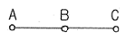
- 6.25 × 103
- 8.75 × 103
- 12.5 × 103
- 13.5 × 103
(정답률: 45%)
3. 106 cal의 열량은 몇 kWh 정도의 전력량에 상당한가?
- 0.06
- 1.16
- 2.27
- 4.17
(정답률: 76%)
4. 구의 전하가 5×10-6에서 3m 떨어진 점에서 전위를 구하면 몇 V인가? (단,ℇS=1)이다.
- 10 ×103
- 15 × 103
- 20 × 103
- 25 × 103
(정답률: 80%)
5. C=5[㎌]인 평행판 콘덴서에 5[V]인 전압을 걸어줄 때 콘덴서에 축적되는 에너지는 몇 J인가?
- 6.25 × 10-5
- 6.25 × 10-3
- 1.25 × 10-5
- 1.25 × 10-3
(정답률: 75%)
6. ℇ1 ＞ ℇ2인 두 유전체의 경계면에 전계가 수직일 때 경계면에 작용하는 힘의 방향은?
- 전계의 방향
- 전속밀도의 방향
- ℇ1의 유전체에서 ℇ2의 유전체 방향
- ℇ2의 유전체에서 ℇ1의 유전체 방향
(정답률: 80%)
7. 변위 전류에 대해 설명이 옳지 않은 것은?
- 전도전류이든 변위전류이든 모두 전자 이동이다.
- 유전율이 무한히 크면 전하의 변위를 일으킨다.
- 변위전류는 유전체 내에 유전속 밀도의 시간적 변화에 비례한다.
- 유전율이 무한대이면 내부 전계는 항상 0이다.
(정답률: 54%)
8. 다음 중 전자유도 현상의 응용이 아닌 것은?
- 발전기
- 전동기
- 전자석
- 변압기
(정답률: 68%)
9. 강유전체에 대한 설명 중 옳지 않은 것은?
- 티탄산 바륨과 인산 칼륨은 강 유전체에 속한다.
- 강유전체의 결정에 힘을 가하면 분극을 생기게 하여 전압이 나타난다.
- 강유전체에 생기는 전압의 변화와 고유진동수의 관계를 이용하여 발전기, 마이크로폰 등에 이용되고 있다.
- 강유전체에 전압을 가하면 변형이 생기고, 내부에만 정부의 전하가 생긴다.
(정답률: 67%)
10. 코일로 감겨진 환상 자기회로에서 철심의 투자율을 μ[H/m]라 하고 자기 회로의 길이를 l[m]라 할때, 그 자기회로의 일부에 미소 공극 lg[m]를 만들면 회로의 자기 저항은 이전의 약 몇 배 정도 되는가?
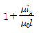
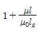
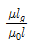
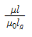
(정답률: 69%)
11. 정전용량이 4[㎌], 5[㎌], 6[㎌]이고, 각각의 내압이 순서대로 500V, 450V, 350V인 콘덴서 3개를 직렬로 연결하고 전압을 서서히 증가시키면 콘덴서의 상태는 어떻게 되겠는가?(단, 유전체의 재질이나 두께는 같다.)
- 동시에 모두 파괴된다.
- 4[㎌]가 가장 먼저 파괴된다.
- 5[㎌]가 가장 먼저 파괴된다.
- 6[㎌]가 가장 먼저 파괴된다.
(정답률: 81%)
12. 다음 중 틀린 것은?
- 저항의 역수는 컨덕턴스 이다.
- 저항률의 역수는 도전율이다.
- 도체의 저항은 온도가 올라가면 그 값이 증가한다.
- 저항률의 단위는 Ω/m2이다.
(정답률: 67%)
13. 속도 v[m/s]되는 전자가 자속밀도 B[wb/m2]인 평등자계 중에 자계와 수직으로 입사했을 때 전자 궤도의 반지름 r은 몇 m인가?
- ev/mB
- mB/ev
- eB/mv
- mv/eB
(정답률: 50%)
14. 진공 중에 있는 반지름 a[m]인 도체구의 표면전하밀도가 σ[C/m2]일 때 도체구 표면의 전계의 세기는 몇 [V/m]인가?
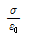
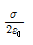
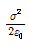
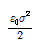
(정답률: 71%)
15. 2cm의 간격을 가진 선간전압 6600V인 두 개의 평행 도선에 2000A의 전류가 흐를때 도선 1m마다 작용하는 힘은 몇 N/m인가?
- 20
- 30
- 40
- 50
(정답률: 58%)
16. 비투자율 μs인 철심이 든 환상 솔레노이드의 권수가 N회, 평균 지름이 d[m], 철심의 단면적이 A[m2]라 할 때 솔레노이드에 I[A]의 전류가 흐르면, 자속[Wb]은?
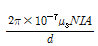
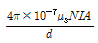
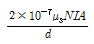
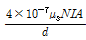
(정답률: 48%)
17. 액체 유전체를 넣은 콘덴서의 용량은 30㎌이다. 여기에 500V의 전압을 가했을 때 누설전류는 약 몇 [mA]인가? (단, 고유저항 p는 1011[Ω ㆍ m], 비유전율 ℇs=2.2이다.)
- 5.1
- 7.7
- 10.2
- 15.4
(정답률: 67%)
18. 다음 식에서 관계없는 것은?
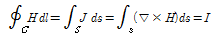
- 맥스웰의 방정식
- 암페어의 주회법칙
- 스토크스(stokes)의 정리
- 패러데이 법칙
(정답률: 69%)
19. 히스테리시스 손실과 히스테리시스 곡선과의 관계는?
- 히스테리시스 곡선의 면적이 클수록 히스테리시스 손실이 적다.
- 히스테리시스 곡선의 면적이 작을수록 히스테리시스 손실이 적다.
- 히스테리시스 곡선의 잔류자기 값이 클수록 히스테리시스 손실이 적다.
- 히스테리시스 곡선의 보자력 값이 클수록 히스테리시스 손실이 적다.
(정답률: 70%)
20. 동심구형 콘덴서의 내외 반지름을 각각 2배로 증가시켜서 처음의 정전용량과 같게 하려면 유전체의 비유전율은 처음의 유전체에 비하여 어떻게 하면 되는가?
- 1배로 한다.
- 2배로 한다.
- 1/2배로 한다.
- 1/4배로 한다.
(정답률: 55%)
2과목: 전력공학
21. 100kVA 단상 변압기 3대로 3상 전력을 공급하던 중 변압기 1대가 고장 났을 때 공급 가능 전력은 몇 kVA인가?
- 200
- 100
- 173
- 150
(정답률: 81%)
22. 부하측에 밸런스를 필요로 하는 배전 방식은?
- 3상 3선식
- 3상 4선식
- 단상 2선식
- 단상 3선식
(정답률: 70%)
23. 장거리 송전선에서 단위 길이당 임피던스 Z=R+jwL[Ω㎞], 어드미턴스 Y=G+jwC[℧/㎞]라 할 때 저항과 누설 컨덕턴스를 무시하는 경우 특성임피던스의 값은?
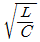
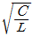
- L/C
- C/L
(정답률: 79%)
24. 345kV 송전계통의 절연협조에서 충격 절연 내력의 크기순으로 나열한 것은?
- 선로애자 > 차단기 > 변압기 > 피뢰기
- 선로애자 > 변압기 > 차단기 > 피뢰기
- 변압기 > 차단기 > 선로애자 > 피뢰기
- 변압기 > 선로애자 > 차단기 > 피뢰기
(정답률: 69%)
25. 선간전압 3300V, 피상전력 330kVA, 역률 0.7인 3상 부하가 있다. 부하의 역률을 0.85로 개선하는데 필요한 전력용 콘덴서의 용량은 약 몇 kVA인가?
- 62
- 72
- 82
- 92
(정답률: 54%)
26. 중성점 접지 방식 중 1선 지락고장일 때 선로의 전압 상승이 최대이고, 통신 장애가 최소인 것은?
- 비접지 방식
- 직접 접지 방식
- 저항 접지 방식
- 소호 리액터 접지 방식
(정답률: 57%)
27. 철탑에서 전선의 오프셋을 주는 이유로 옳은 것은?
- 불평형 전압의 유도 방지
- 상하 전선의 접촉 방지
- 전선의 진동 방지
- 지락 사고 방지
(정답률: 69%)
28. 계통 내의 각 기기, 기구 및 애자 등의 상호간에 적정한 절연 강도를 지니게 함으로서 계통 설계를 합리적으로 하는 것은?
- 기준 충격 절연 강도
- 절연 협조
- 절연계급 선정
- 보호 계전 방식
(정답률: 67%)
29. 무손실 송전선로에서 송전할 수 있는 송전용량은? (단, Es : 송전단 전압, ER : 수전단 전압 δ : 부하각 X : 송전선로의 리액턴스, R : 송전선로의 저항, Y : 송전선로의 어드미턴스)
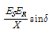
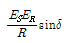
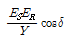
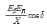
(정답률: 71%)
30. 변압기의 보호방식에서 차동계전기는 무엇에 의하여 동작하는가?
- 정상전류와 역상전류의 차로 동작한다.
- 정상전류와 영상전류의 차로 동작한다.
- 전압과 전류의 배수의 차로 동작한다.
- 1, 2차 전류의 차로 동작한다.
(정답률: 68%)
31. 3상 송배전 선로의 공칭전압이란?
- 그 전선로를 대표하는 전압
- 그 전선로를 대표하는 평균전압
- 그 전선로를 대표하는 선간전압
- 그 전선로를 대표하는 상전압
(정답률: 70%)
32. 62000kW의 전력을 60km 떨어진 지점에 송전하려면 전압은 약 몇 kV로 하면 좋은가? (단, still식을 사용한다.)
- 66
- 110
- 140
- 154
(정답률: 58%)
33. 부하역률이 cosø인 배전선로의 저항 손실은 같은 크기의 부하전력에서 역률 1일때 저항 손실의 몇 배인가?
- cos2ø
- cosø
- 1/cosø
- 1/cos2ø
(정답률: 55%)
34. 그림과 같은 배전선로에서 부하의 급전 시와 차단 시에 조작 방법 중 옳은 것은?
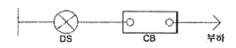
- 급전시는 DS, CB순이고, 차단시는 CB, DS순이다.
- 급전시는 CB, DS순이고, 차단시는 DS, CB순이다.
- 급전 및 차단 시 모두 DS, CB순이다.
- 급전 및 차단시 모두 CB, DS순이다.
(정답률: 75%)
35. 영상 변류기를 사용하는 계전기는?
- 과전류 계전기
- 지락 계전기
- 차동 계전기
- 과전압 계전기
(정답률: 63%)
36. 전력용 퓨즈에 대한 설명 중 틀린 것은?
- 정전 용량이 크다.
- 차단 용량이 크다.
- 보수가 간단하다.
- 가격이 저렴하다.
(정답률: 61%)
37. 옥내배선의 전압강하는 될 수 있는 대로 적게 해야 하지만 경제성을 고려하여 보통 다음 값 이하로 하고 있다. 옳은 것은?
- 인입선 1%, 간선 1%, 분기회로 2%
- 인입선 2%, 간선 2%, 분기회로 1%
- 인입선 1%, 간선 2%, 분기회로 3%
- 인입선 2%, 간선 1%, 분기회로 1%
(정답률: 60%)
38. 페란티 현상이 생기는 주된 원인으로 알맞은 것은?
- 선로의 인덕턴스
- 선로의 정전용량
- 선로의 누설 컨덕턴스
- 선로의 저항
(정답률: 76%)
39. 공기 예열기를 설치하는 효과로 볼 수 없는 것은?
- 화로의 온도가 높아져 보일러의 증발량이 증가한다.
- 매연의 발생이 적어진다.
- 보일러 효율이 높아진다.
- 연소율이 감소한다.
(정답률: 59%)
40. 3상 66kV의 1회선 송전선로의 1선의 리액턴스가 11Ω, 정격 전류가 600A일 때, %리액턴스는?
- 10/√3
- 100/√3
- 10√3
- 100√3
(정답률: 48%)
3과목: 전기기기
41. 60Hz, 12극의 동기 전동기 회전자계의 주변속도[m/s]는?(단, 회전자계의 극 간격은 1m이다.)
- 10
- 31.4
- 120
- 377
(정답률: 40%)
42. 단상 반파 정류회로에서 변압기 2차 전압의 실효값을 E[V]라 할때, 직류 전류 평균값[A]은? (단, 정류기의 전압강하는 e[V], 부하저항은 R[Ω]이다.)
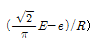
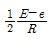
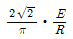
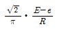
(정답률: 45%)
43. 브러시 홀더는 브러시를 정류자면의 적당한 위치에서 스프링에 의하여 항상 일정한 압력으로 정류자면에 접촉하여야 한다. 가장 적당한 압력[kg/cm2]]은?
- 0.01~0.15
- 0.5~1
- 0.15~0.25
- 1~2
(정답률: 73%)
44. 단상 직권 정류자 전동기의 설명으로 틀린 것은?
- 계자권선의 리액턴스 강하 때문에 계자권선수를 적게 한다.
- 토크를 증가시키기 위해 전기자 권선수를 많게 한다.
- 전기자 반작용을 감소하기 위해 보상권선을 설치한다.
- 변압기 기전력을 크게 하기 위해 브러시 접촉저항을 적게 한다.
(정답률: 65%)
45. 3상 유도전동기의 원선도 작성시 필요치 않은 시험은?
- 저항 측정
- 무부하 시험
- 구속 시험
- 슬립 측정
(정답률: 76%)
46. 변압기의 임피던스 와트와 임피던스 전압을 구하는 시험은?
- 충격 전압 시험
- 부하 시험
- 무부하 시험
- 단락 시험
(정답률: 63%)
47. 3상 직권 정류자 전동기에 있어서 중간 변압기를 사용하는 주된 목적은?
- 역회전의 방지를 위하여
- 역회전을 하기 위하여
- 권수비를 바꾸어서 전동기의 특성을 조정하기 위하여
- 분권 특성을 얻기 위하여
(정답률: 69%)
48. 220[V], 6극, 60[Hz], 10[kW]인 3상 유도 전동기의 회전자 1상의 저항은 0.1[Ω], 리액턴스는 0.5[Ω]이다. 정격 전압을 가했을 때 슬립이 4%일 때 회전자 전류는 몇 [A]인가? (단, 고정자와 회전자는 △결선으로서 권수는 각각 300회와 150회이며, 각 권선계수는 같다.)
- 27
- 36
- 43
- 52
(정답률: 35%)
49. 직류기에서 공극을 사이에 두고 전기자와 함께 자기회로를 형성하는 것은?
- 계자
- 슬롯
- 정류자
- 브러시
(정답률: 69%)
50. 그림과 같은 동기 발전기의 무부하 포화곡선에서 포화계수는?
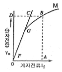
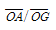
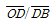
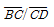
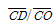
(정답률: 71%)
51. 4극, 60Hz, 3상 권선형 유도전동기에서 전부하 회전수는 1600rpm이다. 동일 토크로 회전수를 1200rpm으로 하려면 2차 회로에 몇 [Ω]의 저항을 삽입하면 되는가? (단, 2차 회로는 Y결선이고, 각 상의 저항은 r2이다.)
- r2
- 2r2
- 3r2
- 4r2
(정답률: 57%)
52. 동기 발전기의 안정도를 증진시키기 위하여 설계상 고려할 점으로서 틀린 것은?
- 속응 여자방식을 채용한다.
- 단락비를 작게 한다.
- 회전부의 관성을 크게 한다.
- 영상 및 역상임피던스를 크게 한다.
(정답률: 62%)
53. 동기발전기의 병렬운전에서 기전력의 위상이 다른 경우, 동기화력 (Ps)를 나타낸 식은? (단, P : 수수전력,δ : 상차각이다.)
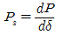
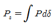
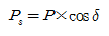
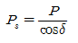
(정답률: 53%)
54. 계자저항 100[Ω], 계자전류 2[A], 전기자 저항이 0.2[Ω]이고, 무부하 정격속도로 회전하고 있는 직류 분권 발전기가 있다. 이때의 유기기전력[V]은?
- 196.2
- 200.4
- 220.5
- 320.2
(정답률: 72%)
55. 3상 동기기의 제동권선을 사용하는 주 목적은?
- 출력이 증가한다.
- 효율이 증가한다.
- 역률을 개선한다.
- 난조를 방지한다.
(정답률: 78%)
56. 6극, 220[V]의 3상 유도전동기가 있다. 정격전압을 인가해서 기동시킬 때 기동토크는 전부하토크의 220[%]이다. 기동토크를 전부하 토크의 1.5배로 하려면 기동전압[V]을 얼마로 하면 되는가?
- 163
- 182
- 200
- 220
(정답률: 48%)
57. 교류 전동기에서 브러시의 이동으로 속도변화가 가능한 것은?
- 농형 전동기
- 2중 농형 전동기
- 동기 전동기
- 시라게 전동기
(정답률: 72%)
58. 제 13차 고조파에 의한 회전자계의 회전방향과 속도를 기본파 회전자계 방향과 비교할 때 옳은 것은?
- 기본파와 반대 방향이고 1/13의 속도
- 기본파와 동일 방향이고 1/13의 속도
- 기본파와 동일 방향이고 13배의 속도
- 기본파와 반대 방향이고 13배의 속도
(정답률: 60%)
59. 단상 단권 변압기 2대를 V결선으로 해서 3상 전압 3000[V]를 3300[V]로 승압하고, 150[kVA]를 송전하려고 한다. 이 경우 단상 변압기 1대분의 자기용량[kVA]은 약 얼마인가?
- 15.74
- 13.62
- 7.87
- 4.54
(정답률: 37%)
60. 3상 유도전동기의 속도제어법이 아닌 것은?
- 1차 주파수 제어
- 2차 저항 제어
- 극수 변환법
- 1차 여자 제어
(정답률: 65%)
4과목: 회로이론
61. 교류회로에서 역률이란 무엇인가?
- 전압과 전류의 위상차의 정현
- 전압과 전류의 위상차의 여현
- 임피던스와 리액턴스의 위상차의 여현
- 임피던스와 저항의 위상차의 정현
(정답률: 67%)
62. 임피던스 궤적이 직선일 때 이의 역수인 어드미턴스 궤적은?
- 원점을 통하는 직선
- 원점을 통하지 않는 직선
- 원점을 통하는 원
- 원점을 통하지 않는 원
(정답률: 62%)
63. L형 4단자 회로망에서 R1,R2를 정합하기 위한Z1은? (단, R2 ＞ R1이다.)
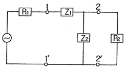
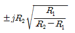
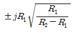
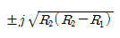
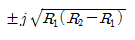
(정답률: 38%)
64. 대칭 3상 교류에서 각 상의 전압이 va, vb,vc일 때 3상 전압의 합은?
- 0
- 0.3va
- 0.5va
- 3va
(정답률: 75%)
65. 비정현파에서 여현 대칭의 조건은 어느 것인가?
- f(t)=f(-t)
- f(t)=-f(-t)
- f(t)=-f(t)
- f(t)=-f(t+T/2)
(정답률: 52%)
66. 어떤 회로에 e=50sinwt[V]를 인가 시 i=4sin(wt-30°)[A]가 흘렀다면 유효전력은 몇 [W]인가?
- 173.2
- 122.5
- 86.6
- 61.2
(정답률: 57%)
67. 그림과 같은 회로의 출력전압 e0(t)의 위상은 입력 전압 ei(t)의 위상보다 어떻게 되는가?
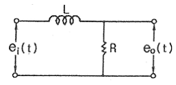
- 앞선다.
- 뒤진다.
- 같다.
- 앞설수도 있고 뒤질 수도 있다.
(정답률: 61%)
68. 전원과 부하가 다같이 △결선된 3상 평형회로에서 전원 전압이 200V, 부하 한 상의 임피던스가 6+j8[Ω]인 경우 선전류는 몇 [A]인가?
- 20
- 20/√3
- 20√3
- 40√3
(정답률: 64%)
69. 3[㎌]인 커패시턴스를 50[Ω]의 용량성 리액턴스로 사용하려면 정현파 교류의 주파수는 약 몇 kHz로 하면 되는가?
- 1.02
- 1.04
- 1.06
- 1.08
(정답률: 59%)
70. R[Ω]의 저항 3개를 Y로 접속하고 이것을 선간전압 200[V]의 평형 3상 교류 전원에 연결할 때 선전류가 20A 흘렀다. 이 3개의 저항을 △로 접속하고 동일 전원에 연결하였을 때의 선전류는 몇 [A]인가?
- 30
- 40
- 50
- 60
(정답률: 59%)
71. 그림과 같은 회로의 합성 인덕턴스는?
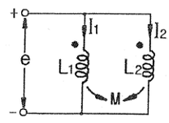
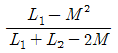
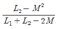
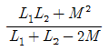
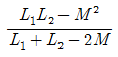
(정답률: 59%)
72. 어떤 회로의 단자 전압 및 전류의 순시값이
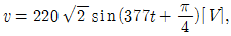
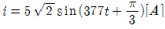
일 때, 복소 임피던스는 약 몇 [Ω]인가?- 42.5-j11.4
- 42.5-j9
- 50+j11.4
- 50-j11.4
(정답률: 57%)
73. 단자 전압의 각 대칭분 V0, V1, V2가 0이 아니면서 서로 같게 되는 고장의 종류는?
- 1선 지락
- 선간 단락
- 2선 지락
- 3선 단락
(정답률: 47%)
74.
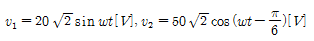
일 때, v1+v2의 실효값[V]은?- √1400
- √2400
- √2900
- √3900
(정답률: 46%)
75. t=0에서 스위치 S를 닫았을 때 정상 전류값[A]은?
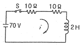
- 1
- 2.5
- 3.5
- 7
(정답률: 68%)
76. 다음과 같은 전기회로의 입력을e1, 출력을 e0라고 할 때 전달함수는? (단, T=L/R이다.)(문제 복원 오류로 그림 파일이 없습니다. 정답은 4번입니다. 여기서는 4번을 누르면 정답 처리 됩니다.)
- Ts+1
- Ts2+1
- 1/Ts+1
- Ts/Ts+1
(정답률: 69%)
77. RC 회로의 입력단자에 계단 전압을 인가하면 출력 전압은?
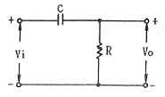
- 0부터 지수적으로 증가한다.
- 처음에는 입력과 같이 변했다가 지수적으로 감쇠한다.
- 같은 모양의 계단 전압이 나타난다.
- 아무것도 나타나지 않는다.
(정답률: 63%)
78. 인 라플라스 함수를 시간함수로 고치면 어떻게 되는가?
(정답률: 51%)
79. 그림과 같은 T형 회로의 영상 전달 정수 θ는?
- 0
- 1
- -3
- -1
(정답률: 57%)
80. 에서 모든 초기값을 0으로 하였을 때 i(t)의 값은?
(정답률: 58%)
5과목: 전기설비기술기준 및 판단 기준
81. 특고압용 변압기로서 변압기 내부고장이 발생할 경우 경보장치를 시설하여야 할 뱅크 용량의 범위는?
- 1000kVA 이상 5000kVA 미만
- 5000kVA 이상 10000kVA 미만
- 10000kVA 이상 15000kVA 미만
- 15000kVA 이상 20000kVA 미만
(정답률: 48%)
82. 저압 가공전선이 철도 또는 궤도를 횡단하는 경우에는 레일면상 높이가 몇 m 이상이어야 하는가?
- 5
- 5.5
- 6
- 6.5
(정답률: 63%)
83. 고압 옥상전선로의 전선이 다른 시설물과 접근하거나 교차 하는 경우 이들 사이의 이격거리는 몇 cm 이상이어야 하는가?
- 30
- 60
- 90
- 120
(정답률: 59%)
84. 지중 전선로의 매설 방법이 아닌 것은?
- 관로식
- 인입식
- 암거식
- 직접 매설식
(정답률: 61%)
85. 동일 지지물에 고압 가공전선과 저압 가공전선을 병가할 때 저압 가공전선의 위치는?
- 저압 가공전선을 고압 가공전선 위에 시설
- 저압 가공전선을 고압 가공전선 아래에 시설
- 동일 완금류에 평형되게 시설
- 별도의 규정이 없으므로 임의로 시설
(정답률: 70%)
86. 전철에서 직류귀선의 비절연 부분이 금속제 지중관로와 접근하거나 교차하는 경우 상호 전식 방지를 위한 이격거리는?
- 0.5m 이상
- 1m 이상
- 1.5m 이상
- 2m 이상
(정답률: 49%)
87. 시가지에 시설하는 특고압 가공전선로의 철탑의 경간은 몇 m 이하이어야 하는가?
- 250
- 300
- 350
- 400
(정답률: 66%)
88. 고압 가공전선이 가공 약전류 전선과 접근하는 경우 고압 가공전선과 가공 약전류 전선 사이의 이격거리는 몇 cm 이상 이어야 하는가? (단, 전선이 케이블인 경우이다.)
- 15
- 30
- 40
- 80
(정답률: 45%)
89. 전기 욕기용 전원 장치의 금속제 외함 및 전선을 넣는 금속관에는 제 몇 종 접지공사를 하여야 하는가?(오류 신고가 접수된 문제입니다. 반드시 정답과 해설을 확인하시기 바랍니다.)
- 제 1종
- 제 2종
- 제 3종
- 특별 제 3종
(정답률: 49%)
90. 154kV 가공 전선로를 제 1종 특고압 보안공사에 의하여 시설하는 경우 사용 전선은 인장강도 58.84kN 이상의 연선 또는 단면적 몇 mm2 이상의 경동연선 이어야 하는가?
- 35
- 50
- 95
- 150
(정답률: 58%)
91. 지중전선로를 직접 매설식에 의하여 시설하는 경우, 차량 기타 중량물의 압력을 받을 우려가 있는 장소의 매설 깊이는 최소 몇 cm 이상이면 되는가?(2021년 개정된 KEC 규정 적용)
- 100
- 120
- 150
- 180
(정답률: 58%)
92. 특고압 가공전선로의 중성선의 다중접지 시설에서 각 접지선을 중선선으로부터 분리하였을 경우 각 접지점의 대지 전기 저항값은 몇 Ω 이하이어야 하는가?
- 100
- 150
- 300
- 500
(정답률: 60%)
93. 발전기, 전동기, 조상기, 기타 회전기(회전 변류기 제외)의 절연내력 시험시 시험 전압은 권선과 대지 사이에 연속하여 몇 분 이상 가하여야 하는가?
- 10
- 15
- 20
- 30
(정답률: 69%)
94. 고압 가공전선이 상부 조영재의 위쪽으로 접근시의 가공 전선과 조영재의 이격 거리는 몇 m 이상이어야 하는가?
- 0.6
- 0.8
- 1.2
- 2.0
(정답률: 41%)
95. 전로의 중성점을 접지하는 목적에 해당되지 않는 것은?
- 보호 장치의 확실한 동작의 확보
- 부하 전류의 일부를 대지로 흐르게 하여 전선 절약
- 이상 전압의 억제
- 대지 전압의 저하
(정답률: 58%)
96. 터널에 시설하는 사용전압이 400V 이상의 저압인 경우, 이동전선은 몇 mm2이상의 0.6/1kV EP 고무 절연 클로로프렌 케이블이어야 하는가?
- 0.25
- 0.55
- 0.75
- 1.25
(정답률: 62%)
97. 애자사용 공사에 의한 고압 옥내배선의 시설에 사용되는 연동선의 단면적은 최소 몇 mm2의 것을 사용하여야 하는가?
- 2.5
- 4
- 6
- 10
(정답률: 39%)
98. 고압용 기계기구를 시설하여서는 안되는 경우는?
- 발전소, 변전소, 개폐소 또는 이에 준하는 곳에 시설하는 경우
- 시가지 외로서 지표상 3m인 경우
- 공장 등의 구내에서 기계기구의 주위에 사람이 쉽게 접촉할 우려가 없도록 적당한 울타리를 설치하는 경우
- 옥내에 설치한 기계 기구를 취급자 이외의 사람이 출입할 수 없도록 설치한 곳에 시설하는 경우
(정답률: 60%)
99. 765kV 특고압 가공전선이 건조물과 2차 접근상태로 있는 경우 전선 높이가 최저상태일 때 가공전선과 건조물 상부와의 수직 거리는 몇 m 이상이어야 하는가?
- 20
- 22
- 25
- 28
(정답률: 42%)
100. 전력보안 통신용 전화설비를 시설하지 않아도 되는 경우는?
- 수력설비의 강수량 관측소와 수력발전소간
- 동일 수계에 속한 수력 발전소 상호간
- 발전 제어소와 기상대
- 휴대용 전화설비를 갖춘 22.9kV 변전소와 기술원 주재소
(정답률: 69%)
전자기파의 에너지 밀도는 E2/2μ와 H2/2ε로 표현할 수 있다. 여기서 μ는 자유공간의 자기적인 투자율이고, ε는 전기적인 투자율이다.
따라서, 전자기파가 자유공간을 c의 속도로 전파될 때, 단위 면적을 지나는 에너지는 다음과 같이 계산할 수 있다.
W/m2 = (E2/2μ) x (c/2) + (H2/2ε) x (c/2)
= (1/2) x (E2/μ) x (c/2) + (1/2) x (H2/ε) x (c/2)
= (1/2) x EH
따라서, 정답은 "EH"이다.